1:10:22 · 19 OPERE
Eroi ed antieroi.
Il filo del discorso
Dr Divago costruisce una rassegna di figure che considera voci di dissenso nella pandemia e le contrappone agli interlocutori che accusa di conformismo. Il percorso si apre con Goya e Munch: il sonno della ragione e L’urlo diventano immagini attraverso cui leggere le contraddizioni della modernità. Gli aforismi attribuiti a Twain e a Swift preparano il tema della resistenza a rivedere le proprie convinzioni, seguito da una polemica contro un articolo tedesco sul ruolo di fisici ed economisti nel dibattito sanitario. La scheda conserva queste letture come posizioni del relatore, distinguendo argomenti, accuse e giudizi sulle persone. La parte centrale passa dalla memoria di Robert Winterstein alla lettera di Hans Jürgen Scheurle sui test PCR, ai libri di Claus Köhnlein e alle figure di Ioannidis, Wodarg, Gupta, Heneghan, Kulldorff, Bhakdi e Bhattacharya. Si intrecciano critica delle restrizioni, valutazione dell’autorevolezza professionale, discussione delle stime epidemiologiche e un’ampia riflessione sul rapporto fra sapere ricevuto ed esperienza. I documenti identificati permettono di distinguere una lettera d’opinione da uno studio scientifico e di correggere l’uso di percentuali locali come se fossero valori universali. Nessuna delle qualifiche o delle biografie richiamate basta a convalidare tutte le tesi sanitarie presentate. Nella parte finale il dramma Un nemico del popolo, l’intervista a Vera Sharav e le riflessioni di Lévy, Agamben e Berenson accompagnano il tema della libertà di parola e della responsabilità individuale. Le analogie con la persecuzione nazista restano attribuite, senza equiparare automaticamente vicende e istituzioni diverse. Pascal e Jung introducono infine il rapporto fra ragione e sensibilità, mentre Notte stellata conclude il video con la fiducia del relatore nel valore dell’arte e della ricerca personale. Il filo che tiene insieme la rassegna è la richiesta di discutere le argomentazioni, anziché sostituirle con reputazioni, etichette o appartenenze.
I libri nel discorso
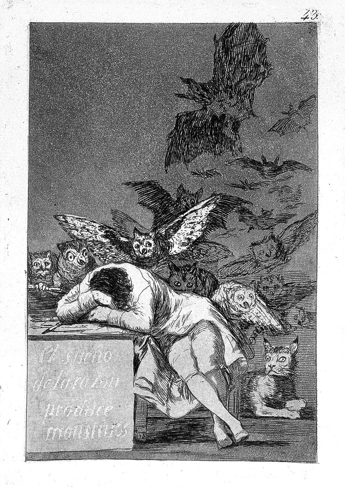
Il sonno della ragione genera mostri (El sueño de la razón produce monstruos)
Riproduzione della tavola 43 dei Caprichos: Los Caprichos, tavola 43, prima pubblicazione 1799; riproduzione dell’esemplare Wellcome 36752i.
Immagine autentica dell’incisione dalla Wellcome Collection, non una copertina libraria. L’opera è collegata probabilmente all’allusione; non è accertato l’esemplare mostrato nel filmato. La datazione della matrice e la pubblicazione della serie sono distinte.
Titolo e serieCaprichos espliciti; corrisponde alla tavola43 già censita. Pubblicazione1799 distinta dall’occupazione napoleonica1808.
Passaggio 0:22 ↗ · Fonti e libro ↗
L’urlo (Skrik / The Scream)
Dipinto del 1893, Nasjonalmuseet: Versione del 1893, tempera e pastello grasso su cartone, 91 × 73,5 cm. Nasjonalmuseet, Oslo, inventario NG.M.00939. Fotografia di Børre Høstland.
Riproduzione museale autentica dell’intero dipinto del 1893 con cornice. Non è una copertina editoriale; è distinta dalle altre versioni dipinte, dai pastelli e dalla litografia di Munch. Credito fotografico: Børre Høstland, Nasjonalmuseet.
EdvardMunch,L’urlo e anno1893 espliciti. Riuso della versione museale già presente, distinta dalle altre versioni e dalla litografia.
Passaggio 1:09 ↗ · Fonti e libro ↗
Dialettica dell’illuminismo
Copertina: Einaudi, Piccola Biblioteca Einaudi, 2010
Edizione illustrativa dell'opera, con traduzione di Renato Solmi e introduzione di Carlo Galli; non identificata nel video.
TitoloDialettica dell’illuminismo esplicito: il relatore propone ipoteticamenteGoya come copertina, non una nuova edizione pubblicata.
Passaggio 4:58 ↗ · Fonti e libro ↗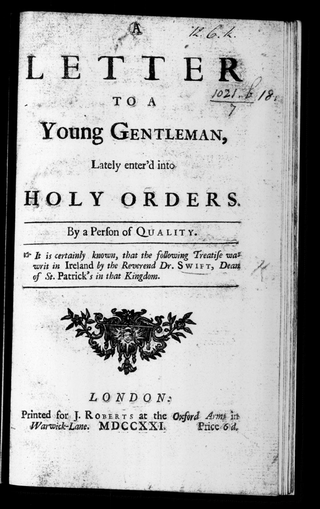
A Letter to a Young Gentleman, Lately Enter’d into Holy Orders
Identificazione probabile
Copertina: J. Roberts, Londra ·1721 · frontespizio originale
Frontespizio autentico dell’opuscolo1721, riprodotto integralmente dal facsimile microfilmato: titolo, attribuzione al Dr.Swift, stampaJ.Roberts eMDCCXXI leggibili. È un frontespizio, non una copertina esterna moderna. L’identità dell’esemplare del video non è verificata.
Swift1721 e frase riconoscibile espliciti, ma titolo non pronunciato. FacsimileRoberts1721p27 riscontra la frase nel contesto religioso; fonte probabile della citazione, nonYoungPoet.
Passaggio 6:36 ↗ · Fonti e libro ↗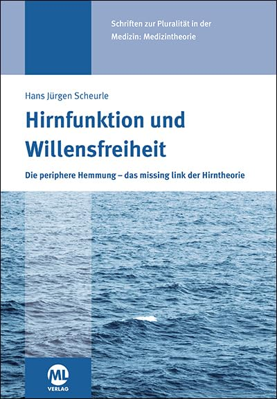
Hirnfunktion und Willensfreiheit
Copertina: ML Verlag ·2020 · ISBN9783964742483
Copertina autentica intera: Hans Jürgen Scheurle, Hirnfunktion und Willensfreiheit, sottotitolo Die periphere Hemmung – das missing link der Hirntheorie, mare e marchioML. Coincide con la copertina nel catalogo dell’editore. Edizione illustrativa2020 non attribuita al video.
Scheurle e volume sufunzione cerebrale e libertà della volontà espliciti; titolo originale verificato nel catalogoMLVerlag2020p77.
Passaggio 24:48 ↗ · Fonti e libro ↗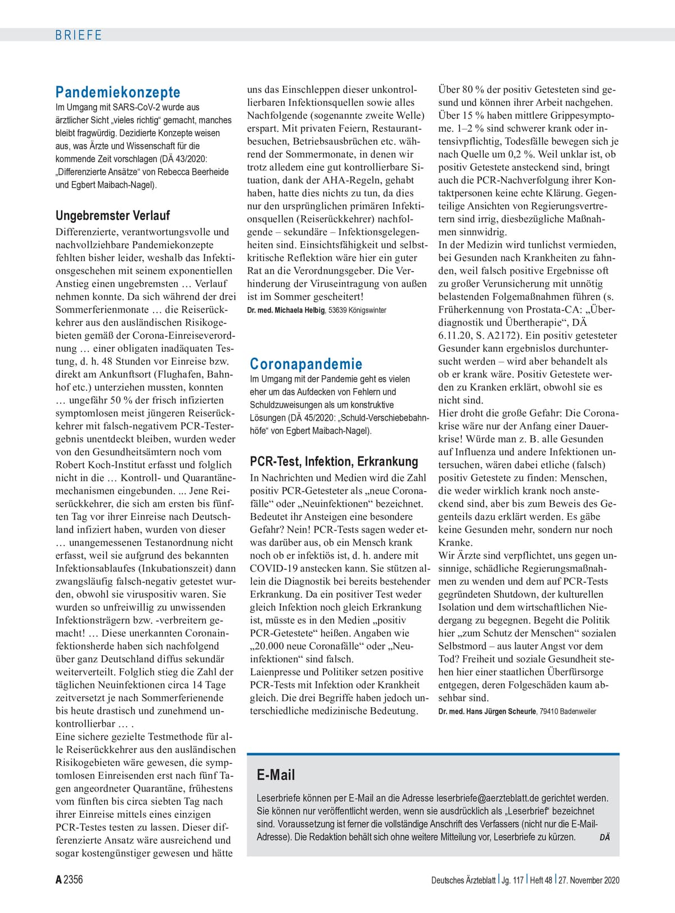
Coronapandemie: PCR-Test, Infektion, Erkrankung
Copertina: Deutsches Ärzteblatt ·117(48),27novembre2020,pA2356/B1984 · pagina originale
Immagine autentica intera della paginaA2356 fornita dalla testata. La letteraScheurle occupa la seconda e terza colonna, con firma; a sinistra è presente una distinta lettera diMichaelaHelbig, non attribuita aScheurle. È una pagina documentaria, non copertina di libro o articolo sperimentale.
LetteraScheurle,DÄnovembre2020 e lettura estesa del testo. Identità letterale verificata nella pagina originale27novembre2020A2356; opinione personale dichiarata dalla redazione.
Passaggio 25:22 ↗ · Fonti e libro ↗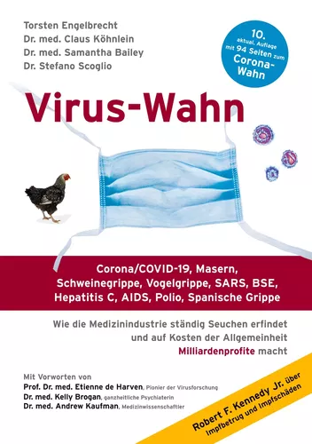
Virus-Wahn (Virus Mania)
Copertina: BoD · decima edizione ampliata2021 · ISBN9783753403069
Copertina autentica dall’editoreBoD: quattro autori, Virus-Wahn, mascherina, sottotitoli e indicazione10a edizione con94pagine sulCOVID. È dichiarata edizione ampliata2021; non si assegnano automaticamente tutti i coautori alle edizioni iniziali o alla copia mostrata nel video.
ClausKöhnlein e titolo resoPazia da virus, conCorona/COVID19 e altre malattie nel sottotitolo. Identità verificata pressoBoD e coautoreEngelbrecht; le tesi restano attribuite.
Passaggio 33:27 ↗ · Fonti e libro ↗
A fiasco in the making? As the coronavirus pandemic takes hold, we are making decisions without reliable data
Identificazione probabile
Illustrazione dell’articolo: ILLUSTRAZIONE DELL’ARTICOLO, sezione First Opinion di STAT, 17 marzo 2020. Fotografia di un operatore che tiene materiale per un tampone in un punto di test del Beaumont Hospital, Royal Oak, Michigan; credito Paul Sancya/AP, come dichiarato nella pagina. Non è una copertina di libro o di studio sperimentale e non raffigura la Diamond Princess.
Fotografia editoriale associata alla pagina STAT, credito Paul Sancya/AP; non immagine della nave né del suo studio. Identificazione dell’articolo probabile.
Ioannidis e analisi inizialeDiamondPrincess espliciti; titolo non pronunciato e più riprese possibili. Probabile contributoSTAT17marzo2020 già censito: testo originale mostra intervallo0,05–1% e ipotesi centrale0,3%, non la certezza0,03% espressa nel video.
Passaggio 35:33 ↗ · Fonti e libro ↗
L’uomo a una dimensione
Copertina: Einaudi, Piccola Biblioteca Einaudi, 1999
Copertina di un’edizione bibliografica dell’opera, con introduzione di Luciano Gallino. La citazione nel video resta probabile; questa edizione non vi è confermata.
Marcuse eL’uomo a una dimensione espliciti nel confronto fra standardizzazione del gusto e del sapere.
Passaggio 47:24 ↗ · Fonti e libro ↗
Il medico a una dimensione. La medicina tra etica e diritto
Identificazione probabile
Copertina: Un Altro Punto di Vista, 2020. Copertina autentica fornita nel sito dell’autore: titolo, sottotitolo, autore e marchio unaltropuntodivista riscontrati. Il nome della cartella web 2018 non è assunto come anno di pubblicazione. Non si attribuiscono un numero di pagine o un ISBN senza riscontro sufficiente.
Immagine autentica dell’opera, controllata visivamente; l’edizione di riferimento non è attribuita al filmato.
Conversa, libro già discusso e monodimensionalità: collegamento probabile aIl medico a una dimensione, opera già censita e riscontrata nel sito dell’autore. Titolo completo non pronunciato; non attribuiti anche gli altri libriConversa.
Passaggio 47:34 ↗ · Fonti e libro ↗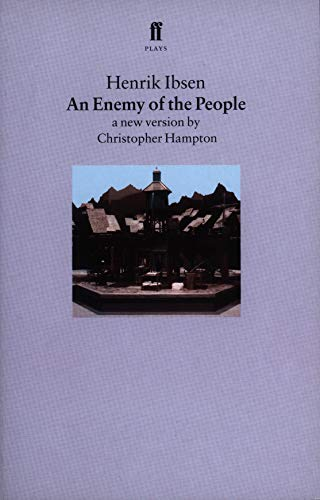
Un nemico del popolo (En folkefiende / An Enemy of the People)
Copertina: Faber and Faber / catalogoMacmillan ·1998 · nuova versioneChristopherHampton · ISBN9780571194292
Copertina autentica intera: HenrikIbsen,AnEnemyofThePeople e specificazione a new version by ChristopherHampton, marchioffPlays. La versioneHampton1998 è illustrativa e distinta dall’originaleIbsen1882 e dall’adattamentoArthurMiller; nessuna versione è attribuita al video.
Enemy of the People,Unnemico del popolo e trama del medico respinto dal paese espliciti. AutoreIbsen e originale1882 riscontrati nell’archivio dell’Università diOslo. NonParkes, non automaticamente l’adattamentoMiller.
Passaggio 52:37 ↗ · Fonti e libro ↗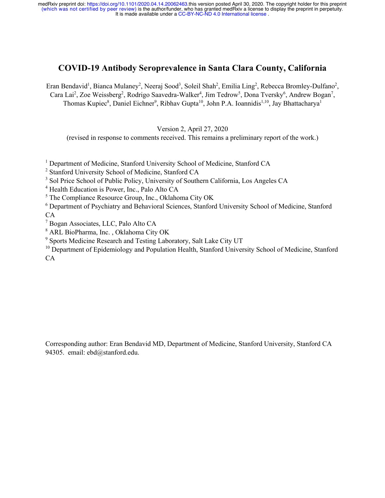
COVID-19 antibody seroprevalence in Santa Clara County, California
Identificazione probabile
Prima pagina autentica del preprint 2020; non versione finale 2021: Preprint medRxiv, versione 2 del 27 aprile 2020, depositata il 30 aprile; copia SAGE / Governo britannico
Pagina intera renderizzata dalla copia istituzionale del preprint, non impaginato Oxford 2021 né articolo già sottoposto a revisione. Titolo e DOI del preprint distinguono la versione. L’elenco include anche Emilia Ling e Dona Tversky, assenti dalla versione finale: non si assume identità di autori, dati o conclusioni fra stesure. Nessuna copertina ricostruita.
Bhattacharya a Stanford, studio iniziale con reclutamento tramite social media: convergenza su Santa Clara, ma titolo e luogo non pronunciati. Identificazione probabile; il risultato finale locale 0,17% differisce dallo 0,03% detto nel video.
Passaggio 53:13 ↗ · Fonti e libro ↗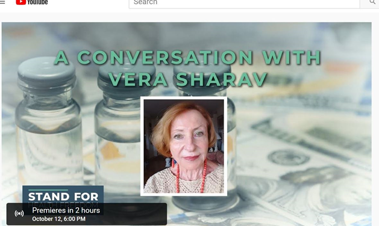
Nazism, COVID-19 and the Destruction of Modern Medicine: An Interview with Vera Sharav
Copertina: Stand for Health Freedom · intervista12ottobre2020 · ripubblicazioneAHRP3maggio2025
Immagine autentica collegata dalla paginaAHRP: schermata del videoAConversationwithVeraSharav, ritratto,logotipoStandforHealthFreedom e annuncio12ottobre. È illustrazione della stessa intervista, non copertina libraria o fotografia scelta per inferire qualità personali. Il contenuto e le analogie storiche sono opinioni dell’intervistata.
VeraSharav eNazismo,COVID19 e distruzione della medicina moderna espliciti. L’intervista diLeahWilson è riscontrata nella ripubblicazioneAHRP2025 della fonteStandforHealthFreedom12ottobre2020.
Passaggio 57:24 ↗ · Fonti e libro ↗
Il virus che rende folli
Copertina: La nave di Teseo · Le onde · 2020
Immagine autentica dell’opera, controllata visivamente; l’edizione di riferimento non è attribuita al filmato.
Bernard-HenriLévy eIl virus che rende folli espliciti, come libro già discusso nel canale.
Passaggio 1:00:47 ↗ · Fonti e libro ↗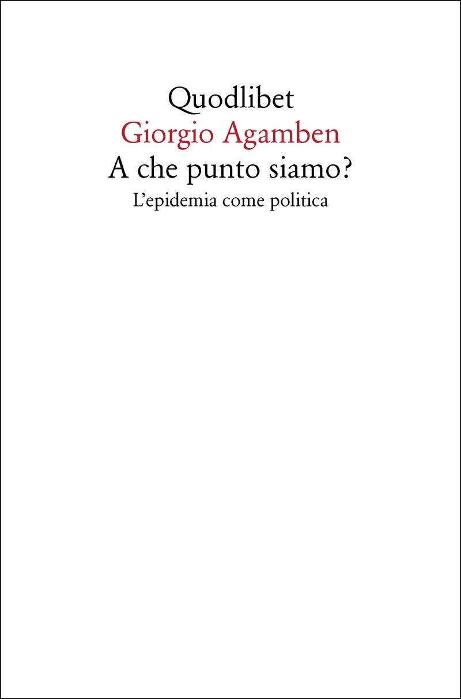
A che punto siamo? L’epidemia come politica
Copertina: Quodlibet ·2020 · ISBN9788822905390
Copertina autentica integrale scaricata dalla pagina dell’editore: Quodlibet,GiorgioAgamben,Achepuntosiamo?,L’epidemiacomepolitica. Il grande spazio bianco appartiene alla grafica editoriale, non è un segnaposto. Edizione illustrativa2020, non assegnata al video.
Agamben e sottotitoloL’epidemia come politica espliciti; catalogoQuodlibet identifica la raccoltaAchepuntosiamo?, senza dedurre altre opere.
Passaggio 1:01:00 ↗ · Fonti e libro ↗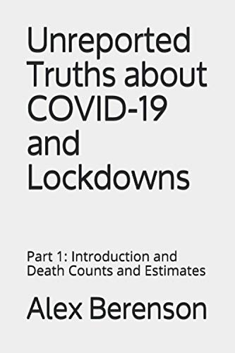
Unreported Truths about COVID-19 and Lockdowns: Part 1 — Introduction and Death Counts and Estimates
Copertina: AlexBerenson ·2020 · prima parte in inglese · ISBN9781953039019
Copertina autentica integrale, con titolo,Part1,IntroductionandDeathCountsandEstimates eAlexBerenson. Immagine perISBN confrontata con cataloghi della prima parte. Non viene assegnatoBowker come editore certo: il campo di un catalogo aggregato non basta a risolvere l’imprint dell’autopubblicazione. Nessuna paginazione uniformata fra formati diversi.
AlexBerenson,UnreportedTruthsaboutCOVID19andLockdowns,Part1 e sottotitoloIntroductionandDeathCountsandEstimates espliciti attraverso resa italiana. Prima parte distinta dai successivi fascicoli e dalSubstack.
Passaggio 1:01:27 ↗ · Fonti e libro ↗
Pensieri
Copertina: UTET · a cura di Bruno Nacci · 2021
Copertina autentica dell’edizione di riferimento, non attribuita all’esemplare del video.
Pascal ePensieri espliciti, con frase sulle ragioni del cuore. Nessuna pagina o numerazione del frammento arbitrariamente attribuita.
Passaggio 1:06:36 ↗ · Fonti e libro ↗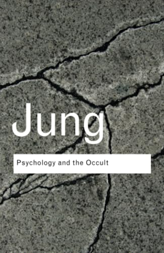
Foreword to Jung: “Phénomènes occultes” (Prefazione a Phénomènes occultes)
Identificazione probabile
Copertina: Routledge Classics ·Psychology and the Occult ·2008 · raccolta contenente la prefazione1938 · ISBN9780415437455
Copertina autentica intera della raccoltaRoutledge2008: Jung, PsychologyandtheOccult e fondo di pietra screpolata. Usata l’immagine verticale325×500; scartate due miniature quasi quadrate delCDNeditoriale perché ritagliate. Il titolo in copertina è quello della raccolta, non della breve prefazione citata. Edizione non attribuita al video.
Jung e frase sulla ragione senza cuore e vita psichica impoverita espliciti. Passo riscontrato nella prefazione1938,p3 della raccoltaRoutledge2008; titolo non pronunciato,identificazione probabile.
Passaggio 1:06:43 ↗ · Fonti e libro ↗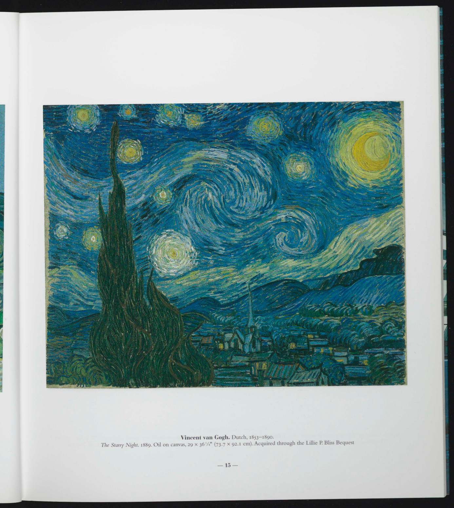
Notte stellata (The Starry Night)
Copertina: MoMA · opera472.1941 ·Saint-Rémy1889 · tavola di catalogo, pagina stampata15
Tavola autentica intera del catalogoMoMATobelookedat: riproduzione a colori del dipinto, margini, didascaliaVanGogh/TheStarryNight1889 e pagina15 conservati. ImmagineJPEG originale incorporata nelPDF, estratta senza ritagli, ridisegni o sostituzioni. Non una copertina di libro e non il dipinto delRodano.
VanGogh,NotteStellata e stelle nel cielo espliciti. OperaMoMA472.1941 riscontrata nella tavola originale; non laNotteStellatasulRodano1888. Il saggio astronomico ricordato non è identificato.
Passaggio 1:07:24 ↗ · Fonti e libro ↗